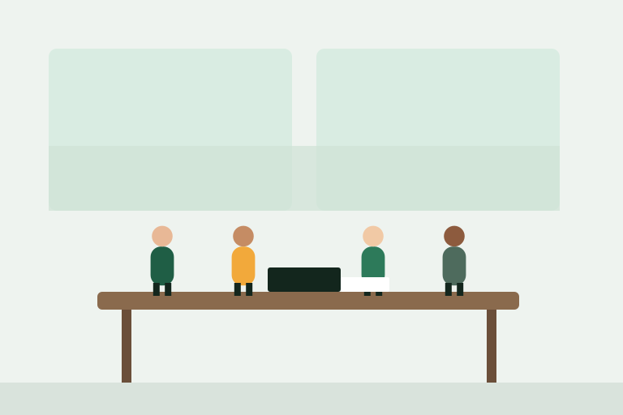

Des ingénieurs au service d'une énergie plus sobre
Verdance est née d'une conviction : chaque entreprise peut réduire son empreinte énergétique, à condition d'avoir des chiffres fiables et un plan réaliste.
Notre histoire
Fondé à Lyon par deux ingénieurs issus de l'industrie et du bâtiment, le cabinet a d'abord accompagné des ateliers de la vallée du Rhône. Aujourd'hui, notre équipe de douze ingénieurs suit plus de 240 sites, de l'entrepôt logistique à l'immeuble de bureaux.
Notre mission reste la même : transformer les obligations et les incertitudes en projets rentables, mesurés et durables.

Nos valeurs
Mesurer avant d'agir
Pas de recommandation sans données : chaque préconisation repose sur des mesures et un calcul de rentabilité.
Parler vrai
Nous indiquons aussi ce qui ne vaut pas la peine d'être fait. Notre rémunération ne dépend pas du montant des travaux.
Rester jusqu'au résultat
Nous suivons les économies réelles pendant un an après les travaux, et corrigeons si besoin.
L'équipe dirigeante
Profils de démonstration — à remplacer par les vraies personnes.
Rejoindre ou contacter l'équipe
Nous recrutons des ingénieurs énergie passionnés.